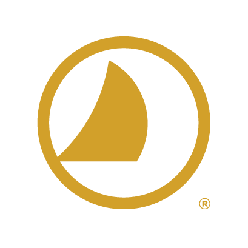
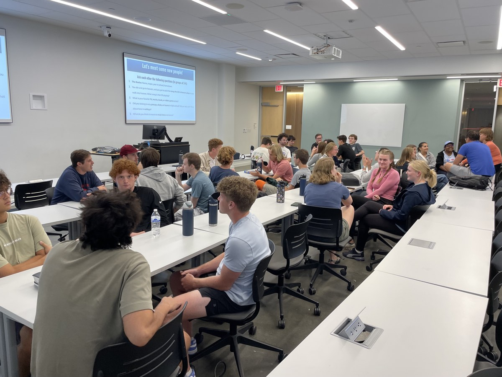
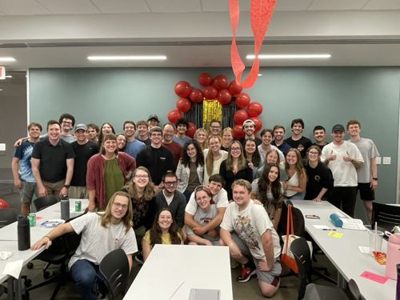
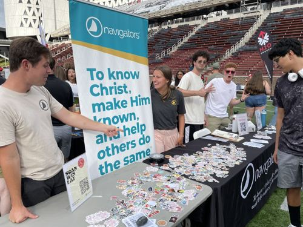

Bible study — smaller groups, tighter friendship
Our studies are all about making observations and asking questions. They're scattered throughout campus. Check out Instagram for up to date details.

Cincy NavsCincy Navs is a community of UC students building deep friendships where we can be known and loved. We believe that Jesus changes lives (he's changed ours!), and that anyone can study the Bible. Let's dig deeper together, questions welcome.
We're a campus branch of The Navigators, meeting weekly at UC.

Nav Night — 2025
End of year party — 2026
Student org fair — 2025"Bible study was one of the only places I found that I could completely let my guard down during my freshman year. I could take all of the stressors from the day, and completely drop them. Navs felt like a place where I could just rest and be myself."
— Nathan, student org president
Nav Night — Thu, 7:30pm, Lindner 3125
The main way to meet everyone — hear a talk from Scripture and get to know more people. It's also a great way to connect to a Bible study that works for your schedule and meet the leaders.
Bible study — smaller groups, tighter friendship
Our studies are all about making observations and asking questions. They're scattered throughout campus. Check out Instagram for up to date details.
Coffee, one-on-one — nothing formal, just a conversation
Email or DM us on Instagram to set it up. We'd love to get to know you.